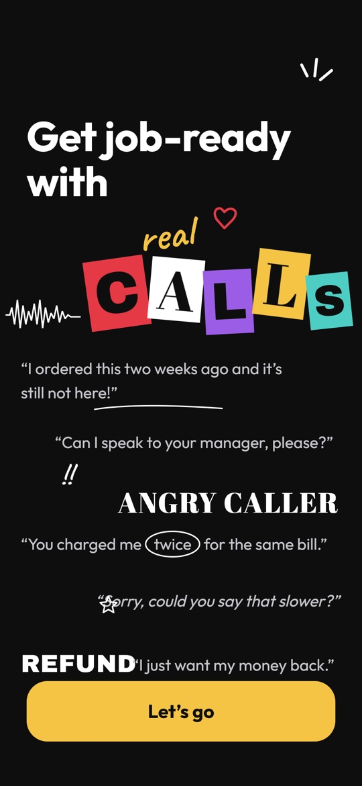
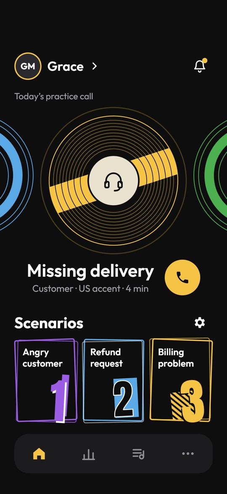
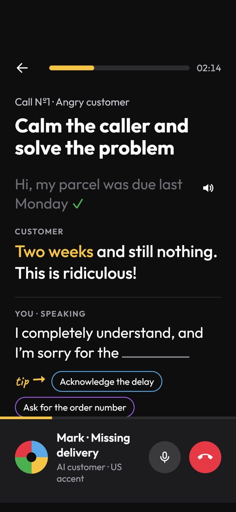
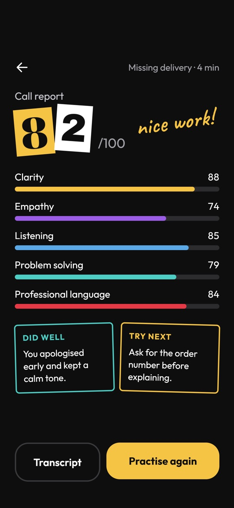

CallReady
Practice for call-centre work: the app plays an angry customer and scores how the call was handled. Five screens are reproduced from a heavily illustrated design, and more are the app's own, added so that every control leads somewhere.




What it shows
- Turned elements: tiles and text drawn through a transform, with text that stays sharp.
- Multi-colour vector pictures and illustrations loaded from SVG files.
- Text effects: hard shadows, outlined digits, italic, numbers that line up.
- A launcher icon of its own, drawn from the app's art by
cargo run -p callready --example icon. - Recording and playback through effects, with a server that plays the caller.
Run it
cargo test -p callready
cargo run -p callready --example screenshot -- out/ --diff
tools/preview.sh callreadyWithout its server it is a scripted app. With it, the call is real:
cd examples/callready/server
cp .env.example .env # then fill in the keys; .env is never committed
npm start # 127.0.0.1:8787The server needs a PostgreSQL database and a DeepSeek key, and optionally an ElevenLabs key for voice; without the voice key calls run in text. Node 22 or newer.
examples/callready/SCREENS.md lists every screen and control.